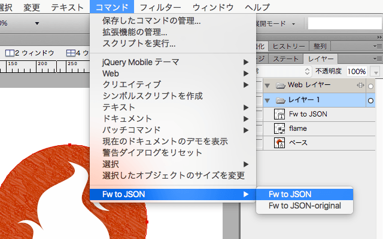
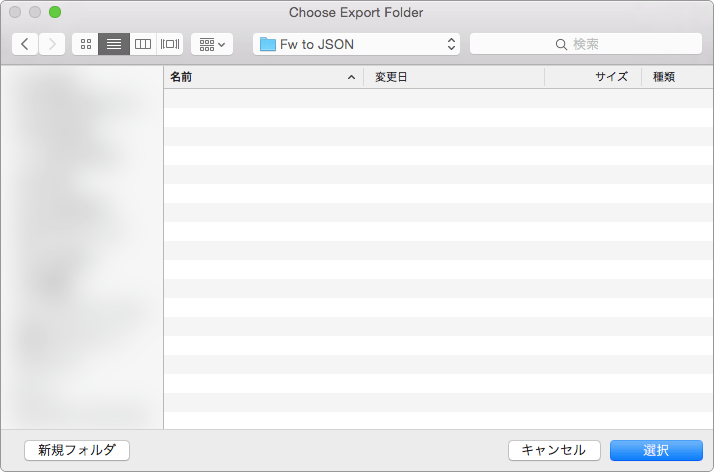
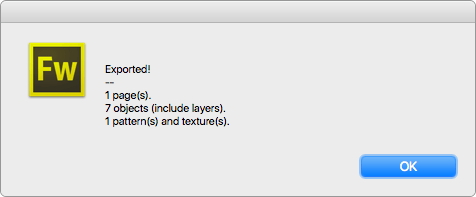

これは何？
FireworksのDocumentDOMを、JSONとして書き出す拡張機能です。
動作環境とライセンス
OS X版 Fireworks CS6（Windows版とCS5以下は未テスト） / MITライセンス
使い方
JSON形式で書き出したいファイルを開きます。
{kind=link}
プラグインを実行します。

JSONファイルの書き出し先を選択します。

書き出しが終わると、書き出したオブジェクト数を表示します。必要なリソースファイルを、JSONファイルの書き出し先に指定した同階層のフォルダへ格納されます。

あとは焼くなり煮るなりして料理してください。拙作の「JSON to Layersプラグイン」で、Sketch 3へ取り込むこともできます。
仕様
- FireworksのDocumentDOMを、JSONとして書き出します。構造やプロパティ名などは、元と同じになるようにしていますが、一部のプロパティを削除したり独自のプロパティを追加したりしており、オリジナルそのままではありません。
- JSONファイルは、Fireworksドキュメントと同一名で保存します。リソースファイルを格納するフォルダは、「
fw2json-exported-＋ Fireworksドキュメント名」です。 - 塗りや線にパターン・テクスチャを適用している場合、オリジナルのパターンおよびテクスチャファイルが存在すれば、リソースフォルダへ書き出します。
- したがって、Fireworks内蔵のパターン・テクスチャは必ず書き出しされます。
- オリジナルの場合、ファイルを読み込んだ場所が記録されているため、その場所へファイルを配置するか、改めてファイルを読み込んでください。ファイルが存在しない場合、プロパティとして
falseを設定します。
- 塗りや線にパターンを適用している場合、その適用されているオブジェクトそのものをビットマップファイルとして書き出します。これは、パターンの開始位置を正確に再現するため、パターンファイルとは別に書き出しを行っています。
- 書き出しする際は、オブジェクト1つずつ新規ドキュメントを作成しコピー & ペースト、保存を繰り返しますので、かなりの負荷が予測されます。非表示にしているオブジェクトも書き出しに含まれますので、不要なページやレイヤー（シンボル含む）は整理してからプラグインを実行すれば、書き出し時間を短縮できます。Fireworks ConsoleやDOM Inspectorをインストールしている場合は、インスペクタを非表示にした状態でFireworksを再起動させるか、プラグインマネージャーで無効化してください。
- ドキュメントに配置されているシンボルインスタンスを元に、シンボルを書き出します。同一シンボルからつくられているインスタンスでも、配置している大きさが異なる場合は、異なるシンボルとして書き出します。
- 配置されているインスタンスは、シンボルとのリンクを解除して中のオブジェクトを走査します。したがって、プラグイン実行後は必ず保存せずに閉じてください。
既知のバグ
- 今のところ確認できていません。
履歴
- 1.0.0［2016.6.19］
- 初リリース